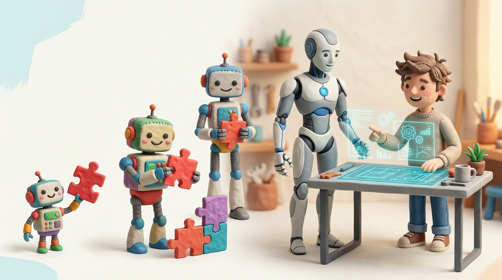

바이브코딩Vibe Coding
AI에게 말로 부탁해 만드는 새로운 소프트웨어 시대 ✨
오늘 함께 나눌 이야기
복잡한 컴퓨터 명령어 대신 일상 말로 만드는 원리와 비유
단순 타자 도우미에서 든든한 실전 파트너까지의 변화
현장에서 바라본 가장 큰 무기와 절대 놓치면 안 될 위험
내 상황에 맞는 추천 도구와 실패 없는 4가지 실전 요령
AI 시대에 사람에게 가장 빛나는 두 가지 핵심 능력
바이브코딩이란 무엇인가요?
| 구분 | 기존 방식 | 바이브코딩 (새로운 방식) |
|---|---|---|
| 사람의 역할 | 내가 직접 벽돌을 쌓고 못을 박음 | 원하는 분위기(바이브)와 구조를 말로 설명 |
| 만드는 주체 | 사람 (직접 하나하나 시공) | AI (설계와 뼈대 제작을 대신 수행) |
| 핵심 고민 | "이걸 어떻게 손으로 코딩하지?" | "사람들에게 어떤 가치를 전할까?" |
바이브코딩은 어떻게 시작되었을까요?
① 이전의 모습: 옆에서 거들어주던 AI
- 타자 도우미: 사람이 명령어를 치면 뒷부분 글자를 조금씩 미리 채워주던 역할
- 복사·붙여넣기: 챗봇 대화창에서 코드를 얻어 사람이 직접 손으로 옮겨 담던 단계
- 한계: 여전히 컴퓨터 언어를 잘 아는 전문가만 다룰 수 있었음
② 2025년 초: 탄생과 폭발적인 유행
- 2025년 2월 첫 등장: AI 권위자 안드레 카파시가 음성으로 앱을 만들며 “그저 느낌(Vibe)에 맡긴다”고 소개
- 올해의 단어 등극: 전 세계적인 열풍으로 영국 콜린스 사전 '2025 올해의 단어' 선정
- 전용 도구의 급성장: 말만 적으면 즉시 웹사이트를 띄워주는 서비스(러버블, 볼트 등) 등장
어떻게 발전하고 성숙해졌을까요?
③ 2025년 후반: 실전 서비스 제작
장난감 수준을 넘어 실제 사람들이 쓰고 결제하는 비즈니스 제품 제작에 널리 활용되었습니다. 코딩을 모르는 기획자·창업가가 빠르게 아이디어를 시장에 내놓았습니다.
④ 2026년 현재: 함께 점검하는 성숙한 협업
무조건 맡겼을 때 생기는 보안 구멍이나 코드 엉킴 현상을 경험하면서, “AI가 빠른 초안을 짜고 사람이 꼼꼼히 확인하는 방식”이 안전한 표준으로 안착했습니다.

한눈에 살펴보는 3단계 변화 흐름
| 구분 | 바이브코딩 이전 | 2025년 초 (시작과 열풍) | 2026년 현재 (성숙과 표준) |
|---|---|---|---|
| 만드는 방식 | 사람이 직접 작성하고 AI가 조금 보조 | AI에게 말로 시키고 결과만 확인 | AI가 빠른 초안을 만들고 사람이 함께 점검 |
| 주요 사용자 | 전문 프로그래머 중심 | 새로운 것에 빠른 개발자·얼리어답터 | 기획자, 디자이너, 학생, 일반인, 기업 전체 |
| 도구의 능력 | 글자 자동완성, 대화창 답변 | 말로 한두 개 화면을 뚝딱 생성 | 내 컴퓨터 파일과 정보 저장소까지 안전하게 관리 |
시니어 엔지니어가 본 장점과 현실적인 주의점
- 압도적인 개발 속도: 머릿속 아이디어를 단 몇 분 만에 직접 눌러볼 수 있는 진짜 결과물로 탄생
- 극적으로 낮아진 문턱: 전문 코딩 지식 없이도 내 일상과 업무에 딱 맞는 맞춤 도구 제작
- 보안과 안전 구멍: 겉은 잘 돌아가도 비밀번호·개인정보 보호 처리가 빠질 수 있음
- 커질수록 생기는 엉킴: 새 기능을 넣다가 예전에 잘 되던 기능이 조용히 망가질 수 있음
- 맹신 금지: AI가 "완벽히 고쳤다"고 해도 반드시 사람이 직접 눌러보며 점검해야 함
무엇으로 시작할까요? (목적별 맞춤 도구)
설치 없이 바로 만들기
러버블(Lovable) · 볼트(Bolt)
- 인터넷 창만 열면 말로 웹사이트와 앱을 즉시 생성
- 오른쪽 창에서 마우스로 클릭하며 바로 시험 가능
- 처음 시작하는 분들에게 가장 적합
익숙한 대화창에서 시험
챗GPT · 클로드 · 제미나이
- 평소 쓰던 AI 대화창 옆에 결과물 창 띄우기
- 간단한 계산기, 데이터 시각화 차트에 편리
- 아이디어를 빠르게 다듬기에 안성맞춤
본격적인 컴퓨터 작업
안티그래비티 · 커서
- 내 컴퓨터의 폴더와 파일에 직접 저장하며 제작
- 더 복잡하고 큰 서비스나 회사 업무 자동화에 최적
- 체계적인 파일 관리가 가능
실패하지 않는 4가지 핵심 꿀팁
작게 시작하기 🌱
처음부터 온갖 기능을 다 넣지 마세요. 가장 핵심적인 기능 딱 하나부터 완성하고 살을 붙여야 꼬이지 않습니다.
구체적으로 말하기 💬
"알아서 예쁘게 해줘" 대신 "파란 버튼에 흰 글씨, 누르면 알림 창이 뜨게 해줘"처럼 명확하게 부탁하세요.
자주 눌러보기 🔍
기능을 하나 추가할 때마다 직접 마우스로 눌러보고 작동하는지 점검하세요. 초기에 잡아야 금방 고칩니다.
보안 조심하기 🔒
실제 비밀번호나 결제, 개인정보처럼 민감한 영역은 혼자 넘기지 말고 전문가의 감수를 꼭 받으세요.
앞으로 우리에게 진짜 필요한 두 가지 능력
1. 무엇을 만들지 생각하는 기획력
어려운 프로그래밍 언어를 외우는 것보다, "무엇이 사람들에게 필요하고 어떤 가치를 줄 수 있는가"를 떠올리고 쉬운 말로 설명하는 능력이 가장 강력한 무기가 됩니다.
2. 결과물을 분별하는 판단의 눈
AI가 "다 만들었습니다"라고 해도 무조건 믿지 않고, 제대로 작동하는지, 보안상 위험한 곳은 없는지 똑똑하게 확인하는 눈이 사람의 핵심 역할입니다.
경청해 주셔서 감사합니다! (Q&A)
오늘 발표 내용 중 궁금한 점이나, 당장 만들어보고 싶은 아이디어가 있다면 편하게 이야기 나눠요!